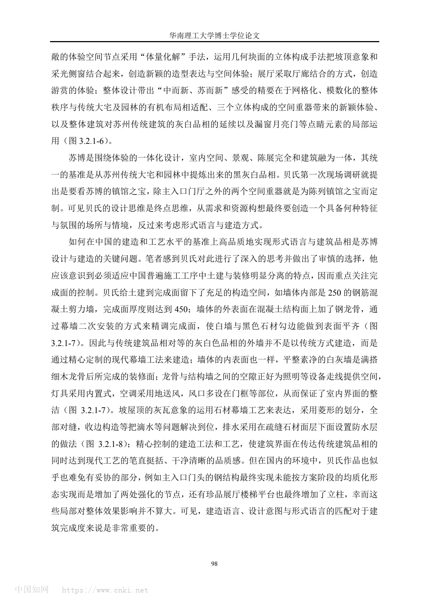

01
基本信息
| 项目名称 | 苏州博物馆新馆 / Suzhou Museum |
|---|---|
| 建筑师 | I. M. Pei Architect / Pei Partnership Architects |
| 地点 | 江苏省苏州市姑苏区东北街与齐门路交汇处，邻近忠王府、拙政园与狮子林 |
| 年份 | 2006 |
| 类型 | Cultural |
| 功能 | 文化建筑 / 博物馆 |
| 状态 | completed; opened to the public in October 2006 |
| 面积 | 新馆约19000余 平方米 |
| 资料可信度 | high |
关键事实
02
项目概述与设计概念
苏州博物馆新馆以低矮院落化布局、黑白灰材料转译、几何屋面和自然光，把苏州传统园林与民居语汇转化为现代公共文化建筑语言。
资料中的概念
官方资料将设计概括为“中而新、苏而新”和“不高不大不突出”，并强调传统与现代、传承与创新；PEI Architects 说明设计从苏州白墙、深灰屋顶和园林建筑语汇中取意。
综合判断
项目通过控制尺度、分块院落、几何坡顶、现代材料和光线组织，在不复制古典园林的前提下延续苏州古城的空间秩序与文化记忆。
03
核心设计策略
历史街区中的低矮分块尺度
- 面对的问题
- 新馆位于拙政园、狮子林、忠王府等高敏感历史环境中，现代公共建筑容易破坏古城尺度。
- 具体做法
- 主体以地下一层、地面一层为主，局部二层；建筑群分为中、西、东三路并组织庭院。
- 建筑效果
- 在满足博物馆容量的同时，使新馆作为古城文化长廊的一部分，而不是压倒周边古建的纪念物。
- 证据
- Directly sourced and synthesis from official description and PDF plan/section page.
- 可迁移方法
- 历史街区的新公共建筑应先控制高度、檐口、分块和院落边界，再展开造型设计。
传统符号的现代材料转译
- 面对的问题
- 直接仿古会削弱现代性，完全现代又可能脱离苏州语境。
- 具体做法
- 延续粉墙黛瓦的黑白灰关系，用“中国黑”花岗石、玻璃天窗和开放式钢结构重构屋面与立面。
- 建筑效果
- 建筑保留苏州传统色彩记忆，同时具备现代构造、耐久性和清晰几何秩序。
- 证据
- Directly sourced from official museum page, Google Arts & Culture and Architectural Record.
- 可迁移方法
- 地域性可以通过比例、颜色、轮廓和性能要求被现代材料重组，而不必原样复制构件。
院落与水景作为建筑和园林的中介
- 面对的问题
- 新馆邻近拙政园，但不能简单打开边界或模拟古典园林。
- 具体做法
- 以主庭院和若干小内庭院组织建筑，使用池塘、片石假山、桥、亭和竹林形成现代山水园。
- 建筑效果
- 参观体验具有园林式的停顿、转折和观看节奏，并与拙政园形成意象上的连续。
- 证据
- Directly sourced from official museum page, Google Arts & Culture and Architizer.
- 可迁移方法
- 面对强历史景观时，可以用庭院、水、墙和路径构造间接连续，而非追求直接复制或视觉打通。
自然光作为空间组织材料
- 面对的问题
- 博物馆既需要控制展品光环境，也需要让公共空间具有开放感和方向感。
- 具体做法
- 通过玻璃天窗、几何屋顶、遮光条和斜角窗导入并调节自然光。
- 建筑效果
- 光线成为路径识别、空间氛围和展览体验的一部分。
- 证据
- Directly sourced from official museum page and Google Arts & Culture.
- 可迁移方法
- 文化建筑的采光策略应同时处理展品保护、路径识别和空间氛围。
从街道到门庭的公共性过渡
- 面对的问题
- 传统深宅大院的封闭感与现代博物馆的公共开放性存在张力。
- 具体做法
- 入口采用玻璃重檐和金属梁架，并建议将临馆东北街改为步行街、以金山石铺地。
- 建筑效果
- 公共性从城市街道、入口前庭、中央大厅到展览空间逐层展开。
- 证据
- Directly sourced from official museum page.
- 可迁移方法
- 公共文化建筑应把街道、入口门庭和室内大厅作为连续系统设计。
04
场地关系
项目位于苏州古城历史街区，邻近忠王府和拙政园。
周边粉墙黛瓦、低矮尺度、园林和历史建筑共同构成设计必须回应的文脉。
东北街步行化和金山石铺地把博物馆公共性延伸到城市界面。
05
空间与流线
建筑群以中部入口、中央大厅和主庭院为核心，西部为主展区，东部为辅展区和行政办公区。
入口八角大厅承担转向和分流作用，展厅沿通道展开，形成介于博物馆展览路径和园林游线之间的体验。
主庭院以水、片石假山、桥、亭和竹林建立现代山水园，并与拙政园形成意象连续。
06
结构、材料与建造
屋面使用深灰色“中国黑”花岗石替代传统小青瓦，兼顾色彩记忆、耐久、维护和平整度。
开放式钢结构、玻璃天窗和遮光条让自然光进入大厅和展区，替代传统木构屋顶中的封闭采光方式。
完整结构体系、柱网、基础和节点详图未检索到可靠公开资料。
07
技术指标
| 场地面积 | 约10700 平方米；另有官方页面出现约10750平方米口径。（reported） |
|---|---|
| 建筑面积 | 新馆约19000余 平方米；不同来源面积口径存在差异。（conflicting） |
| 高度 | 檐口6米内；局部二层16米 米；官方页面提供高度控制说明。（reported） |
| 层数 | 地下一层、地面一层为主，局部二层（reported） |
| 容积率 | ；未检索到可靠资料。（unknown） |
| 建筑密度 | ；未检索到可靠资料。（unknown） |
| 结构体系 | 开放式钢结构、玻璃天窗、局部混凝土墙体；完整结构体系未确认；Architectural Record 记录结构工程顾问为 Leslie E. Robertson & Associates。（limited） |
| 业主 / 委托方 | Suzhou Municipal Administration of Culture, Radio and Television；英文来源记录的业主名称。（confirmed） |
| 备注 | 高精度工程指标仍需正式图纸或业主资料复核。 |
主要材料
白墙、深灰色“中国黑”花岗石屋面与压顶、玻璃天窗、开放式钢结构、金山石铺地。
图纸与摄影信息
ArchDaily China 摄影为 Chenxing Mi；Architectural Record 摄影为 Kerun Ip；本包图像主要来自用户提供 PDF 渲染。
08
场地信息表
区位角色
Text
项目位于苏州古城历史街区，是连接忠王府、拙政园、狮子林等文化资源的公共文化节点。
Evidence Type
sourced
Source Ids
当前案例包暂未提供这一组结构化资料。
Related Image Ids
当前案例包暂未提供这一组结构化资料。
自然环境
Text
庭院、水景、竹林和树木被纳入博物馆体验，形成现代山水园。
Evidence Type
sourced
Source Ids
当前案例包暂未提供这一组结构化资料。
Related Image Ids
当前案例包暂未提供这一组结构化资料。
文化环境
Text
周边传统建筑和园林以粉墙黛瓦、院落和低矮尺度构成主要文脉。
Evidence Type
sourced
Source Ids
当前案例包暂未提供这一组结构化资料。
Related Image Ids
当前案例包暂未提供这一组结构化资料。
地形条件
Text
未检索到复杂地形资料，公开资料主要强调历史街区与相邻园林关系。
Evidence Type
missing
Source Ids
当前案例包暂未提供这一组结构化资料。
Related Image Ids
当前案例包暂未提供这一组结构化资料。
道路与进入
Text
官方资料记录贝聿铭建议将临馆东北街改为步行街，并使用金山石铺地。
Evidence Type
sourced
Source Ids
当前案例包暂未提供这一组结构化资料。
Related Image Ids
当前案例包暂未提供这一组结构化资料。
周边建筑
Text
毗邻忠王府、拙政园和狮子林，周边历史建筑和传统园林对体量、高度和风貌形成强约束。
Evidence Type
sourced
Source Ids
当前案例包暂未提供这一组结构化资料。
Related Image Ids
当前案例包暂未提供这一组结构化资料。
服务人群
Text
服务公众参观者、文化教育使用者、展览和研究人员；功能包括展厅、档案、咖啡、商店和行政办公。
Evidence Type
sourced
Source Ids
当前案例包暂未提供这一组结构化资料。
Related Image Ids
当前案例包暂未提供这一组结构化资料。
场地核心矛盾
Text
现代博物馆的容量、公共性和技术需求必须与古城历史尺度、传统园林和文保建筑相协调。
Evidence Type
synthesis
Source Ids
当前案例包暂未提供这一组结构化资料。
Related Image Ids
当前案例包暂未提供这一组结构化资料。
09
概念创意探索
诊断
项目核心问题是在古城历史风貌和现代博物馆功能之间取得平衡。
定位
官方定位强调“中而新、苏而新”和“不高不大不突出”，说明建筑目标是作为苏州古城公共文化建筑而非孤立地标。
策略
通过低矮分块、三路布局、院落和现代材料转译来回应历史街区。
意象与表达
黑白灰色调、几何坡顶、花岗石屋面、玻璃天窗和创意山水园共同构成现代苏州意象。
10
建筑语言生成
功能梳理
建筑包含展厅、档案、咖啡、礼品店、辅展和行政办公等功能，并通过中央大厅和通道组织参观。
布局逻辑
中部入口、大厅和主庭院，西部主展区，东部辅展和行政办公区构成与忠王府呼应的三路布局。
形体构成
坡屋顶被几何化为三角形、菱形和矩形构成的现代屋面系统，玻璃天窗与钢结构共同塑造空间。
场所与氛围
庭院、水面、光影和材料让参观路线具有园林式的转折、停顿和观看节奏。
11
建造品质控制
建造语言
公开资料确认开放式钢结构、玻璃天窗和现代材料替代传统木构屋面；完整结构体系未确认。
材料与工艺
深灰色“中国黑”花岗石替代小青瓦，解决维护、漏水和平整度问题，并保留黛瓦色彩意象。
构造逻辑
构造逻辑可概括为传统轮廓、现代骨架和可控光线的整合。
物理性能与施工控制
可确认的性能控制集中在自然采光、遮光调节、屋面耐久和维护；施工过程、样板和完整防水细节未检索到可靠资料。
12
核心方法提炼
可迁移方法
历史街区新公共建筑应先处理高度、檐口、分块和院落边界，再处理立面风格。
传统转译可以从颜色、轮廓、材料性能和构造秩序入手，而不是复制符号。
园林式体验可以转化为入口、廊道、庭院、展厅和休憩节点的路径组织。
不宜直接照抄
黑白灰、坡屋顶和片石假山若脱离苏州古城语境，容易变成表面风格；应学习其语境诊断与构造转译方法。
可转化的分析图
- 场地敏感性图
- 三路布局图
- 入口到庭院流线图
- 屋面几何与天光分析图
- 黑白灰材料转译图
- 庭院与拙政园间接连续图
13
图片资料



14
参考来源与信息缺口
- 苏博建筑level_a苏州博物馆
官方页面；用于身份、场地、面积、布局、高度、材料、光线、庭院和步行街等核心事实。
- Suzhou Museumlevel_aPEI Architects
建筑师事务所项目页；用于确认位置、业主、面积、完成时间、功能和设计语汇。
- AD经典：苏州博物馆 / 贝聿铭 + 贝氏建筑事务所level_bArchDaily China
专业建筑媒体；用于建筑师、面积、项目年份、摄影和项目综述。
- 苏州博物馆：贝聿铭建筑大作level_aGoogle Arts & Culture / 苏州博物馆
苏州博物馆提供的专题页面；用于设计挑战、植物、水景、材料、光线和室内体验说明。
- Suzhou Museum by I. M. Peilevel_bArchitectural Record
专业建筑媒体；用于平面组织、展厅关系、花岗石屋面、团队和顾问信息。
- 贝聿铭作品.pdflevel_aUser-provided PDF
用户提供本地 PDF；文本层乱码，已渲染第 6-8 页作为平面、剖面、空间语言和材料构造参考。
- Suzhou Museumlevel_bArchitizer
专业建筑项目媒体；用于补充场地、设计语汇、庭院水景和开放时间。
信息缺口与冲突
- Area：苏州博物馆官方页面记录新馆建筑面积 19000 余平方米、总建筑面积 26500 平方米；PEI Architects 记录 15390 平方米；ArchDaily China 记录 15000 平方米；Architectural Record 记录 183000 sq.ft.。可能来自统计范围不同，需人工复核。
- Structure system：公开资料确认开放式钢结构、玻璃天窗、局部混凝土墙体和结构工程顾问，但未检索到完整结构体系、柱网、基础和节点详图。
- PDF extraction：用户提供 PDF 的文本层存在乱码，本文使用其第 6-8 页渲染图作为图像证据，未逐字引用 PDF 文本。